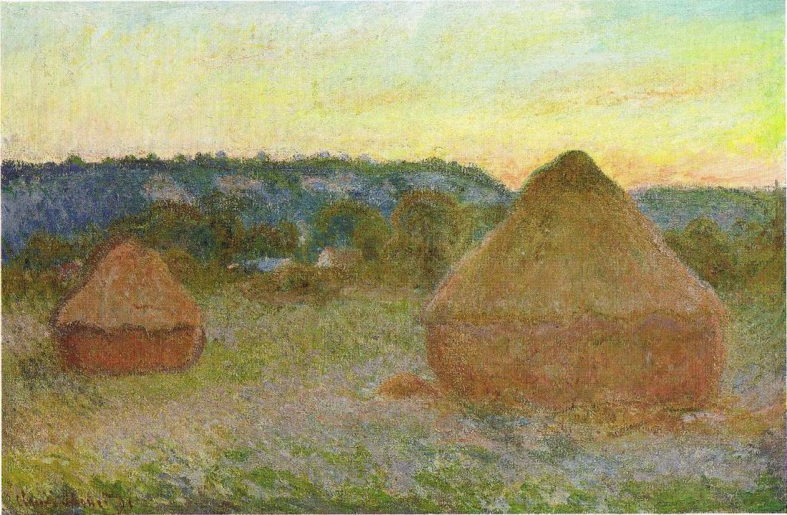

<head>
<meta charset="UTF-8" />
<meta name="keywords" content="drawing, painting" />
<meta name="description" content="drawings by Sunjy" />
<title>Sunjy</title>
<link rel="shortcut icon" type="image/x-icon" href="../../mImages/mCommon/favicon.ico" media="screen" />
<link rel="stylesheet" type="text/css" href="../../mCsses/mCommon/mCssA.css" />
<link rel="stylesheet" type="text/css" href="../../mCsses/mCommon/mCssB.css" />
<link rel="stylesheet" type="text/css" href="../../mCsses/mCommon/mCssC.css" />
<link rel="stylesheet" type="text/css" href="../../mCsses/mCommon/mCssD.css" />
<link rel="stylesheet" type="text/css" href="../../mCsses/mContent/mCssA.css" />
<link rel="stylesheet" type="text/css" href="../../mCsses/mContent/mCssB.css" />
<link rel="stylesheet" type="text/css" href="../../mCsses/mContent/mCssC.css" />
<link rel="stylesheet" type="text/css" href="../../mCsses/mContent/mCssD.css" />
</head>
<script type="text/javascript" src="../../mScripts/mContent/mContentAA.js" /></script>
<script type="text/javascript" src="../../mScripts/mContent/mContentAB.js" /></script>
<script type="text/javascript" src="../../mScripts/mContent/mContentAC.js" /></script>
<script type="text/javascript" src="../../mScripts/mContent/mContentAD.js" /></script>
<script type="text/javascript"></script> 
<script type="text/javascript">
document.write('<div class="mImgAbsolute"></div>');
/*
document.write('<p class="mFontSizeBColor" />From a white paper...</p>');
document.write('<table class="center"><tr><td>');
document.write('');
document.write('</td></tr></table>');
*/
</script>


<script type="text/javascript">
document.write('<p class="mFontSizeBColor" />Stacks of Wheat (End of Day, Autumn)</p>');
document.write('<p class="mFontSizeSColor" />Stacks of Wheat (End of Day, Autumn) by Claude Monet is part of a series of piles of harvested wheat. The series consists of twenty-five canvas, which Monet began near the end of the summer of 1890, and though Monet also produced earlier paintings using this same stack subject.<br><br>The impressionist series is famous for how Monet repeated the same theme to show the different light and atmosphere at different times of day, across the seasons, and in many types of weather.<br><br>Monet’s Haystacks series is one of his earliest to rely on repetition of a subject to illustrate a subtle difference in color perception across variations of times of day, seasons, and weather.<br><br>Monet settled in Giverny in 1883, and most of his paintings from then until his death 40 years later were of scenes within 3 kilometers (2 mi) of his home.<br><br>Monet was intensely aware of and fascinated by the visual nuances of the region’s landscape and by the endless variations in the days and the seasons.<br><br>Monet’s painted various subjects in series under different lights and seasons focused on depictions of atmospheric influences.<br><br>The stacks belonged to Monet’s neighbor, and Monet noticed from his farm the way the light changed on the stacks. Monet started with two canvases, a sunny and an overcast version.<br><br>But Monet soon found he could not catch the ever-changing light and mood on just two paintings.<br><br>Thus Monet’s daily routine involved carting paints, easels, and many unfinished canvases back and forth, working on whichever canvas most closely resembled the scene of the moment as the conditions and light fluctuated.<br><br>Although he began painting the stacks en Plein air, Monet later revised his initial impressions in his studio, both to generate contrast and to preserve the harmony within the series.<br><br>Monet became increasingly fascinated by the seasonal effects and the color harmonies. Monet’s subject matter was carefully chosen and was the product of thought and analysis.<br><br>Monet undertook to capture the Haystacks in direct sunlight and then to explore in his art the same viewpoint in the various light and atmospheric conditions.<br><br>For Monet, the concept of producing and exhibiting a series of paintings related by subject and vantage point began in 1889, and his interest in the serial motif continued for the rest of his career.<br></p>');
document.write('<table class="center" /><tr><td>');
document.write('<br>The impressionist series is famous for how Monet repeated the same theme to show the different light and atmosphere at different times of day, across the seasons, and in many types of weather.<br><br>Monet’s Haystacks series is one of his earliest to rely on repetition of a subject to illustrate a subtle difference in color perception across variations of times of day, seasons, and weather.<br><br>Monet settled in Giverny in 1883, and most of his paintings from then until his death 40 years later were of scenes within 3 kilometers (2 mi) of his home.<br><br>Monet was intensely aware of and fascinated by the visual nuances of the region’s landscape and by the endless variations in the days and the seasons.<br><br>Monet’s painted various subjects in series under different lights and seasons focused on depictions of atmospheric influences.<br><br>The stacks belonged to Monet’s neighbor, and Monet noticed from his farm the way the light changed on the stacks. Monet started with two canvases, a sunny and an overcast version.<br><br>But Monet soon found he could not catch the ever-changing light and mood on just two paintings.<br><br>Thus Monet’s daily routine involved carting paints, easels, and many unfinished canvases back and forth, working on whichever canvas most closely resembled the scene of the moment as the conditions and light fluctuated.<br><br>Although he began painting the stacks en Plein air, Monet later revised his initial impressions in his studio, both to generate contrast and to preserve the harmony within the series.<br><br>Monet became increasingly fascinated by the seasonal effects and the color harmonies. Monet’s subject matter was carefully chosen and was the product of thought and analysis.<br><br>Monet undertook to capture the Haystacks in direct sunlight and then to explore in his art the same viewpoint in the various light and atmospheric conditions.<br><br>For Monet, the concept of producing and exhibiting a series of paintings related by subject and vantage point began in 1889, and his interest in the serial motif continued for the rest of his career.<br>" />');
document.write('</td></tr></table>');
</script>


